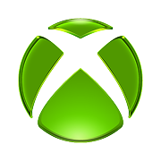

Logos and favicons belong to their owners and are shown here for reference. This is not an endorsement and it is not a license to use the mark.
Xbox’s site is xbox.com. The sphere mark in the tab is the favicon store and Game Pass bookmarks use, separate from the Microsoft logo.
Checked 12 November 2026 against xbox.com. HTML came from https://www.xbox.com/en-US/ (HTTP 200). Icon link tags: icon → https://cms-assets.xboxservices.com/assets/1f/f1/1ff14720-aa8b-4642-8b4a-10096d5cf03b.ico?n=favicon.ico; icon 16x16 → https://cms-assets.xboxservices.com/assets/32/a4/32a4b03d-9354-4c01-b194-7b50762a3961.png?n=favicon-16x16.png; icon 32x32 → https://cms-assets.xboxservices.com/assets/5c/00/5c000795-0763-433f-9f5b-29a9c792d9e9.png?n=favicon-32x32.png; apple-touch-icon 180x180 → https://cms-assets.xboxservices.com/assets/34/2a/342ab54f-f3c6-4e0f-b0f3-91f81a20b15b.png?n=apple-touch-icon.png; icon 192x192 → https://cms-assets.xboxservices.com/assets/b1/ed/b1ed23d2-019e-4e67-a870-0f40825289f9.png?n=android-chrome-192x192.png; icon 512x512 → https://cms-assets.xboxservices.com/assets/73/60/73601350-03f6-4fe5-a213-bce56aefff33.png?n=android-chrome-512x512.png. 1 more are in the table below.
The favicon.ico URL is https://cms-assets.xboxservices.com/assets/1f/f1/1ff14720-aa8b-4642-8b4a-10096d5cf03b.ico?n=favicon.ico. The saved file favicon.ico is 65780 bytes. Directory sizes: 16×16, 32×32, 48×48, 256×256.
The apple-touch-icon URL is https://cms-assets.xboxservices.com/assets/34/2a/342ab54f-f3c6-4e0f-b0f3-91f81a20b15b.png?n=apple-touch-icon.png, measured at 180×180 png.
Brand colour #559900 comes from the most common non-white pixel in png-512x512-03.png, quantised to 4 bits per channel.
Largest measured bitmap: png-512x512-03.png at 512×512 (png, 120081 bytes) from https://cms-assets.xboxservices.com/assets/73/60/73601350-03f6-4fe5-a213-bce56aefff33.png?n=android-chrome-512x512.png.
Saved facts
favicon.ico URL: https://cms-assets.xboxservices.com/assets/1f/f1/1ff14720-aa8b-4642-8b4a-10096d5cf03b.ico?n=favicon.ico
apple-touch-icon URL: https://cms-assets.xboxservices.com/assets/34/2a/342ab54f-f3c6-4e0f-b0f3-91f81a20b15b.png?n=apple-touch-icon.png

Brand colour #559900 — most common non-white pixel in png-512x512-03.png, quantised to 4 bits per channel.
Preview
The preview uses the static snapshot png-180x180-01.png, measured at 180×180. The boxes scale that same saved file in the browser. They are not extra downloads and they do not call the favicon API.

Download
Every button is a file saved from the live response on the check date. Nothing here was resized on a server, and the buttons point at those static files.
png-180x180-01.png favicon.ico ico-256x256-02.png png-512x512-03.png png-192x192-04.png png-32x32-05.png png-16x16-06.png svg-512x512-07.svg


Files and measured dimensions


Link tags found
How this compares with a normal favicon set
A site you publish yourself usually needs a different set from the one Xbox happens to ship: 16×16, 32×32 and 48×48 in one favicon.ico, a 180×180 apple-touch icon, and 192×192 plus 512×512 manifest PNGs. That chart, including 96×96, maskable icons, Windows tiles and SVG, is the favicon dimensions guide. Use Xbox’s files as a reference, then build your own with the PNG to favicon converter.
Related site icons
- Battle.net favicon (battle.net)
- Electronic Arts favicon (ea.com)
- IGN favicon (ign.com)
- Minecraft favicon (minecraft.net)
- Nintendo favicon (nintendo.com)
- PlayStation favicon (playstation.com)
FAQ
What is the Xbox favicon.ico URL?
The favicon.ico is at https://cms-assets.xboxservices.com/assets/1f/f1/1ff14720-aa8b-4642-8b4a-10096d5cf03b.ico?n=favicon.ico (65780 bytes, directory sizes 16×16, 32×32, 48×48, 256×256).
What are the Xbox favicon dimensions?
The pixel sizes below were read from the files, not from a generic size chart. png-180x180-01.png: 180×180 (PNG IHDR) favicon.ico: 16×16, 32×32, 48×48, 256×256 (ICO directory) ico-256x256-02.png: 256×256 (PNG payload inside the ICO. Not resized.) png-512x512-03.png: 512×512 (PNG IHDR) png-192x192-04.png: 192×192 (PNG IHDR) png-32x32-05.png: 32×32 (PNG IHDR) png-16x16-06.png: 16×16 (PNG IHDR) svg-512x512-07.svg: 512×512 (SVG width and height attributes)
What apple-touch-icon does Xbox publish?
The apple-touch-icon is at https://cms-assets.xboxservices.com/assets/34/2a/342ab54f-f3c6-4e0f-b0f3-91f81a20b15b.png?n=apple-touch-icon.png (21659 bytes, 180×180 png), saved as png-180x180-01.png.
What brand colour does the Xbox favicon page record?
The recorded brand colour is #559900, from the most common non-white pixel in png-512x512-03.png, quantised to 4 bits per channel.
Which icon files were saved for Xbox?
On 12 November 2026 these image files were downloaded for xbox.com: png-180x180-01.png (png, 21659 bytes, 180×180); favicon.ico (ico, 65780 bytes, 16×16, 32×32, 48×48, 256×256); ico-256x256-02.png (png, 47670 bytes, 256×256); png-512x512-03.png (png, 120081 bytes, 512×512); png-192x192-04.png (png, 27240 bytes, 192×192); png-32x32-05.png (png, 2214 bytes, 32×32); png-16x16-06.png (png, 813 bytes, 16×16); svg-512x512-07.svg (svg, 712319 bytes, 512×512).
May I use the Xbox icon on my own site?
No. Logos and favicons belong to their owners and are shown here for reference so you can see the real format and dimensions. For your own site, make a file with the PNG to favicon converter or download a site you control.
Look up another domain in the favicon downloader, fetch several at once with the bulk favicon downloader, or go back to the site favicon index.